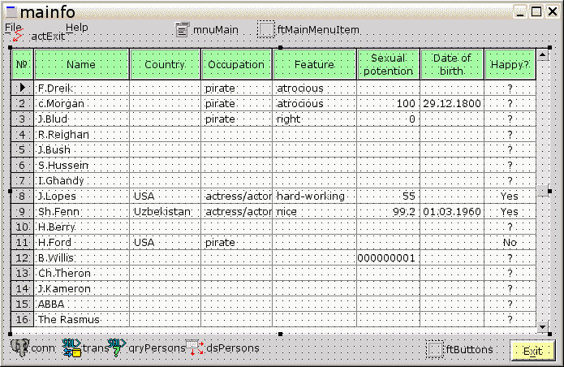
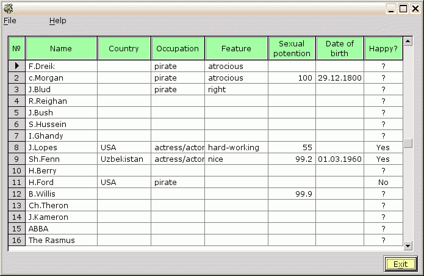

Основную форму – в фокус ( жмем F12) . Растягиваем ее до размера примерно 700x400. Активизируем палитру компонентов :
меню -> View -> Toolbars -> Components palette .
Выбираем вкладку "DB" палитры, и роняем в левый нижний угол формы четыре компонента: «tmsepqconnection», «tmsesqltranaction», «tmsesqlquery» и «tmsedatasource». Эти компоненты – расширенно-исправленные версии соответствующих компонентов [SQL]DB из библиотеки FCL компилятора "FreePascal". Далее выполняем настройку, выбирая каждый компонент и вызывая ( клавишей F11 ) для него редактор свойств :
1) tmsesqltranaction
2) Tmsepqconnection:
Необязательно, см «Создание БД» выше:
Params -> options='--СLIENT_ENCODING=koi8'
Примечание:
- эти настройки спасут нас от возни с отключением/подключение соединения при ошибках БД во время дизайна, например – если ошибемся с текстом SQL-запроса, см. ниже.
Делаем Connected := true , если все нормально с правами доступа к БД и нигде нет опечатки, то все пройдет гладко.
Теперь о подзадаче – чтобы выбрать правильные компоненты для размещения на форме.
Весьма вероятно, что мы просто захотим посмотреть данные и ничего не будем редактировать, соответственно – нам ничего не нужно будет знать о типах просматриваемых данных . Поэтому можно обойтись сложным запросом, объединяющим сразу несколько таблиц, но зато дающим полностью готовый к отображению набор данных.
3) tmsesqlquery :
Необязательно:
- UsePrimaryKeyAsKey := false ( потому что мы не создавали в БД явных уникальных ключей )
select
a.descr,
a.sexual_potention,
a.photo,
b.descr as country,
c.descr as occupation,
d.descr as feature,
a.if_happy,
a.dateofbirth
from persons a left outer join
countries b on a.country_id=b.id left outer join
occupations c on a.occupation_id=c.id left outer join
features d on a.feature_id=d.id
order by a.id;
Почему LEFT OUTER JOIN, а не привычный WHERE ? Потому что по некоторым персонам нет данных по стране обитания и т.п. В этом случае, при использовании WHERE – такие персоны воообще бы не попали в выборку. То есть - мы избежали нежелательноо фильтрующего эффекта WHERE .
Щелкаем на « Test », если нигде не ошиблись – получаем подтверждение ( Test Ok ), и можем закрыватьSQL-редактор (щелкнув “ OK ” ) . Свойство «Active» должно самоустановиться в «true».
Примечание:
Если появляется сообщение « Operation can' t be performed on active dataset » - временно установите“Active := false“. Причина этого сообщения – вы заказали операцию, требующую обновления информации о схеме БД (структуре таблиц, наличии индексов и т.п.)
4) tmsedatasource :
Итого, для показа нам нужны поля:
a.descr, d.descr=feature, c.descr=occupation, b.descr=country, a.sexual_potention, a.if_happy, a.dateofbirth
а в сумме:
4 string , 1 float, 1 boolean и 1 date, а всего 4+1+1+1=7 полей.
Логично предположить, что в таблице нам нужно показать значения именно вышеописанных 7-ми полей, а это значит, что таблица должна содержать 7 столбцов.
Раз тип данных нас не интересует – то можно отобразить их унифицированно, как один тип – строковый. Для это идеально подходит табличный компонент “ tdbstringgrid ”.
Роняем на форму “ tdbstringgrid ” и растягиваем его почти в полную ширину, оставляя по высоте сверху и снизу примерно по 1/7 высоты формы.
Назначим самый левый столбец для автонумерации строк таблица, начиная с "1" :
grdPersons->fixcols->item (-1)
- numstart:= 1 // начиная с "1"
- numstep:= 1 // с шагом "1"
расширяем его еще под один-два символа ( чтобы вместил номра больше 99 ), и назначаем ему заголовок - знак "№" или, если такой символ не поддерживается шрифтом - большая английская "N"
GrdPersons -> foxrows -> item (-1) -> captionsfix -> Append Item
- item 0
- Caption:= #8470 // UNICODE-код символа "знак №"
Теперь смотрим, какие столбцы из результатов запроса нам нужны.
Предварительно устанавливаем “qryPersons.active:= true”, чтобы видеть последующие назначения.
Теперь растягиваем столбцы так, чтобы они заняли всю ширину таблицы, оствив небольшой запас справа. Зачем запас ? Чтобы закрыть его с абсолютной точностью – автоматически.
Так как мы не собираемся сейчас ничего редактировать – уберем даже иллюзию редактирования:
Datacols.count -> options: oo_readonly:= true
Но оставим возможность выбирать части отдельные символы с использованием мыши:
Datacols.count - > optionsedit -> csoe_caretonreadonly:= true
Примечание:
Если нам не нравится, что вертикальный скроллинг слишком груб – включим мягкий скроллинг:
Datalink->options:
- Gdo_propscrollbar:= true
- Gdo_thumbtrack:= true
Но учтите, что на больших таблицах мягкий скроллинг может быть очень медленным.
Теперь осталось озаглавить столбцы.
GrdPersons -> foxrows -> item (-1) -> captions -> Append Item
Примечания :
- #r и #n - коды "возврат каретки" и "перевод строки" соответственно, используются для принудительного переноса следующих за ними символов на новую строку ( чтобы получить многострочный заголовок ) ;
мы используем оба этих кода - для подстраховки, на случай запуска в среде DOS/Windows , ожидающей именно пары кодовРастянем заголовок таблицы по высоте так, чтобы 2-строчные заглавия полностью в нее поместились, с небольшим запасом.
И, наконец, выделим заголовок таблицы - цветом и рельефом :
GrdPersons -> foxrows -> item (-1) -> frame :
- colorclient:= cl_ltgreen // светло-зеленый фон заголовка
- leveli:= -1 // внутреннюю кромку обрамления - опустить
- levelo:= 1 // а внешнюю - наоборот поднять
Мы видим, что столбец “ Sex . potention “ отображает числовые значения, которые принято выравнивать по правой границе:
GrdPersons -> datacols -> item 4 -> textflags -> tf_right:= true
И столбцы «Date of birth» и «Happy ?» лучше смотрятся выровненными по центру :
GrdPersons -> datacols ->
- item 5 -> textflags -> tf_xcentered:= true
- item 6 -> textflags -> tf_xcentered:= true
Также мы видим, что значения во всех столбцах – слишком близко к линиям сетки. Сделаем отступы около 5-ти экранных единиц вкаждом столбце :
GrdPersons -> Datacols ->
- Item 0 .. item 3 -> frame -> [..] -> framei :
- left:= 5
- item 4 -> frame -> [..] -> framei :
- right := 5 // не “ left ”, так как имеет правое выравнивание
"item 5" и "item 6 " не трогаем, так как они - центрированы и потому не имеют отступов
А что делать, если нам не нравятся варианты столбца « Happy ?», и мы хотим , например – “ Yes / No ”, а если нет данных – то знак вопроса «?». Есть несколько способов, но для текущего состояния проекта проще всего это сделать на уровне SQL -запроса - вместо « a . if _ happy » написать условную конструцию «case when a.if_happy = ‘t' then ‘Yes' when a.if_happy = ‘f' then ‘No' else ‘?' end as if_happy». SQL- запрос принимает следующий вид :
select
a.descr,
a.sexual_potention,
a.photo,
b.descr as country,
c.descr as occupation,
d.descr as feature,
case
when a.if_happy = 't' then 'Yes'
when a.if_happy = 'f' then 'No'
else '?'
end as if_happy,
a.dateofbirth
from persons a left outer join
countries b on a.country_id=b.id left outer join
occupations c on a.occupation_id=c.id left outer join
features d on a.feature_id=d.id
order by a.id;
Также при изменении размера окна программы наша таблица остается неизменной – а лучше бы она раздвигалась вслед за окном, сохраняя неизменными все отступы:
grdPersons -> anchors:
- an_top:= true
- an_left:= true
- an_right:= true
- an_bottom:= true
Но и это не все – теперь наша таблица отслеживает размеры окна программ, но только за счет расширения последнего столбца (который с опцией «fill»). Решить эту прооблему помогает опция « propoprtional » столбцов таблицы:
grdPersons -> datacols -> options : co _ proportional := true
Установка этой опции сбрасывает опцию «fill» каждого из столбцов ( реально используемую последним столбцом) , поэтому восстановим ее.
grdPersons -> datacols -> Item6 –> options: co_fill:= true
Теперь мы хотим видеть номера строк (и соостветсвено – сколько всего строк ) , для это используе фиксированный столбец слева:
grdPersons -> fixcols -> Item -1 : numstart:= 1, numstep:= 1
Полезно также подсвечивать некоторым цветом
grdPersons -> datacols -> colorselect : <выбираем понравившийся цвет >
текущую выбраную ячейку таблицы
grdPersons -> datacols -> options : co_focusselect:= true
или даже целиком выбрранную строку
grdPersons -> datacols -> options : co_focusselect:= true, co_rowselect:= true
Есть одна потенциальная некрасивость. Некоторые значения “ sexual _ potention ” могут отображаться некорректно – вместо одной-двух цифр после десятичной точки этих цифр может быть много. Причина – конвертирование из числа с плавающей точкой в тестовую строку, выполняемое с промежуточным преобразованием чисел - одна из застарелых ошибок “ Free Pascal ”. Для решения этой проблемы используем средства для работы с полями БД:
qryPersons -> AfterOpen -> personsafteropen -> вставляем код :
procedure tmainfo.personsafteropen(DataSet: TDataSet);
begin
(dataset.fieldbyname('sexual_potention') as tmsefloatfield).displayformat:= '##.##';
end;То есть – после выборки данных ( и формирования полей ! ) дать команду, как отображать поле“sexual_potention" . “##.##“ означает - не более 2-ч цифр «до» и 2-х цифр «после» десятичного разделителя ( в зависмости от системной локали - не обязательно "точки" ), и будет использовано при прорисовке столбцов таблицы.
также потребуется включить "db" в "interface"-секцию :
interface
uses
msegui,mseclasses,mseforms,msemenus,msesimplewidgets,msepqconnection,msesqldb,
msedb,msedbedit,mseactions,
db // описание "TDataSet"
;
Единственный минус этого способа – его эффект не виден во время дизайна. Есть и другое решение – использовать постоянные ( persistent ) поля, он будет рассмотрен ниже, в данном же случае – является излишним.
Итак, в дизайне имеем следующий вид:

а запустив программу:

Примечания :
Мелкие штрихи :
Примечания :
это значение автоматически сфокусирует приложение на "grdPersons"